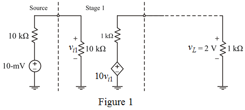

Determine the minimum overall voltage gain required.
Substitute  for
for  and
and  for in the equation.
for in the equation.
Therefore, the overall voltage gain,  is.
is.
Consider the circuit of voltage amplifier.

Determine the minimum overall voltage gain required.
Substitute for and for in the equation.
Therefore, the overall voltage gain, is.
Since open circuit voltage gain of single stage is  .
.
For 3 stages, determine the voltage gain.
Minimum number of amplifier stages required to obtain a voltage gain of 200 is 3.
Therefore, at least 3 stages are required for providing the required gain.
Determine the overall voltage gain of a three stage circuit.
Determine the output voltage, .
Substitute  for
for  in the equation.
in the equation.
Therefore, the output voltage,  is .
is .